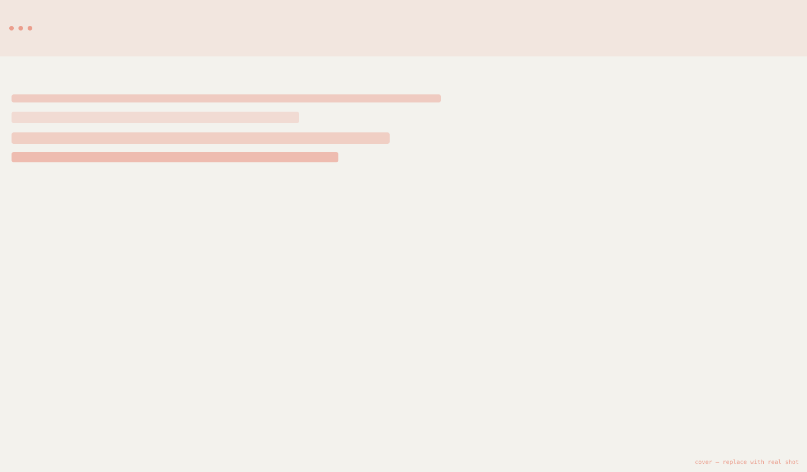
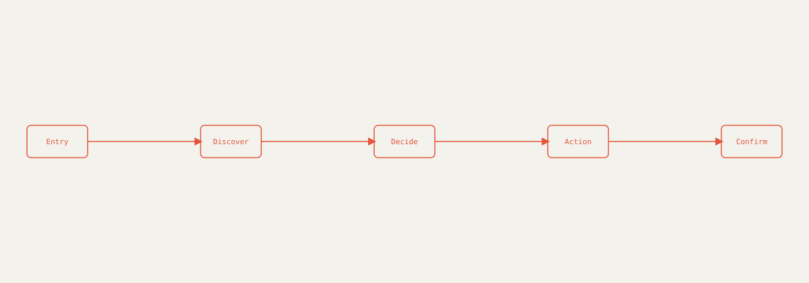
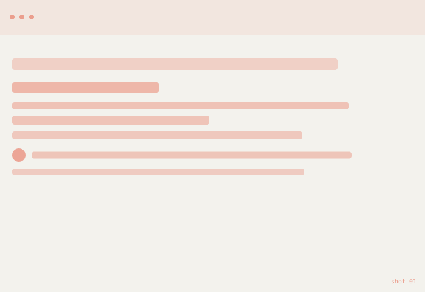
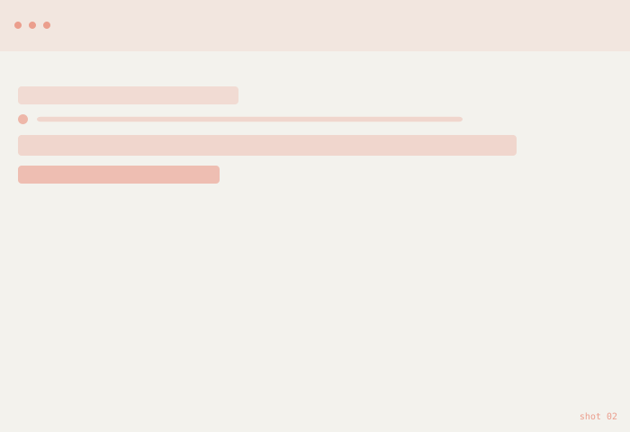
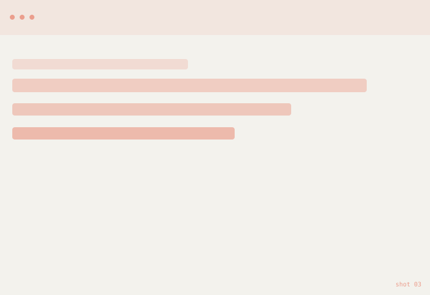
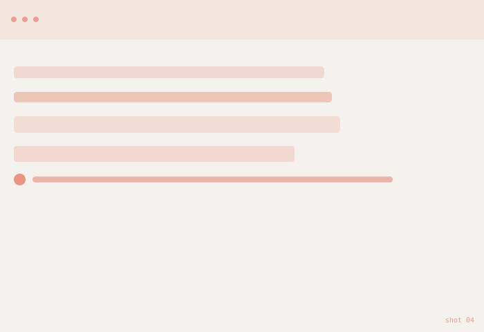

Nova Dashboard
An analytics dashboard for a fast‑moving SaaS team — turning scattered reports and spreadsheets into one dashboard the whole team actually trusts and checks daily.

The problem
The team was pulling numbers from four different tools before every planning meeting, then rebuilding the same charts by hand each week. Decisions slowed down and small errors crept into the reports.
Replace this paragraph with your real problem statement — what was broken, for whom, and how you knew it (interviews, support tickets, analytics, etc.).
UX approach
I started by mapping which metrics each role actually used day to day, instead of trying to fit every possible chart onto one screen.
- Interviewed the team about which reports they check, and when
- Audited existing spreadsheets and tools to find duplicate metrics
- Sketched low‑fidelity dashboard layouts around key user roles
- Prototyped in Figma and tested with 4 team members
- Refined the hierarchy based on what people scanned for first
From login to insight
The redesigned flow gets a user from login to their most relevant metric in one screen, with drill‑down available but never required.

Replace this diagram with your real user‑flow export from Figma or FigJam.
Result & learnings
Describe the outcome here — what changed for the user, what you'd measure (completion rate, time‑to‑order, support tickets), and one or two things you'd do differently next time.
Shots
Replace these with real screenshots from Figma or your shipped product.



